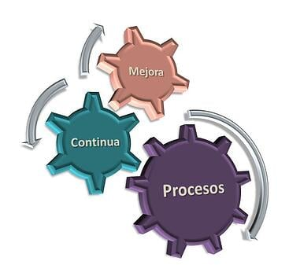
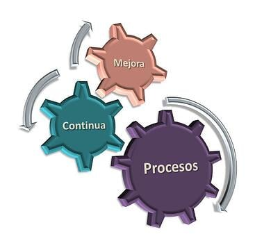

¿Qué diferencias existen entre un líder tradicional y un Scrum Master?
Lìder Tradicional
El liderazgo tradicional se basa en reglas estrictas y procesos que las organizaciones siguen para lograr sus objetivos. Enfocado en la toma de decisiones centralizada, este enfoque empodera a los líderes para tomar decisiones propias y hacer un seguimiento del progreso de sus subordinados.
Scrum Master
El estilo de liderazgo ágil mejora la colaboración del equipo mediante estrategias flexibles. A diferencia de un estilo de liderazgo autoritario, el liderazgo ágil posiciona al líder como facilitador en lugar de dictador.
 

- Centrarse en el proceso frente a centrarse en los resultados: El Scrum Master se centra principalmente en el proceso Scrum y en garantizar que el equipo sigue los principios ágiles y las directrices de Scrum. Se centra en eliminar obstáculos, mejorar la productividad y optimizar el proceso. Un jefe de equipo, en cambio, se centra más en alcanzar los objetivos y resultados del equipo. El jefe de equipo suele asumir un papel de liderazgo para garantizar que el equipo alcance sus objetivos y trabaje conjuntamente de forma eficaz. Además, suelen tener una formación técnica.
- Responsabilidades: El Scrum Master es responsable de garantizar que el equipo comprenda el proceso Scrum, se adhiera a él y lo mejore continuamente. Se centra en crear un entorno óptimo para el equipo. Un Jefe de Equipo es más responsable del rendimiento y los resultados del equipo. Esto puede incluir la planificación de recursos, el establecimiento de objetivos, las revisiones del rendimiento y el liderazgo general del equipo.
- Liderazgo de equipos vs. facilitación: El Jefe de Equipo tiene un papel más activo en la gestión del equipo y da instrucciones claras para garantizar que el equipo alcance sus objetivos. El Scrum Master, por su parte, asume un papel más de apoyo y facilitación. Se centra en crear un entorno en el que el equipo pueda trabajar de forma autónoma y en eliminar los obstáculos que puedan dificultar el progreso.
- Objetivo: Scrum Master: El principal objetivo del Scrum Master es la mejora continua del equipo y del proceso ágil. Jefe de equipo: El Jefe de Equipo pretende maximizar la eficacia del equipo en la consecución de sus objetivos profesionales.
Conclucìon
Asumir las funciones de Scrum Master y Jefe de Equipo al mismo tiempo no es lo ideal y no se recomienda. Al mismo tiempo, probablemente sea una realidad en muchos equipos. En este caso, el papel requiere una gestión cuidadosa del tiempo, una comunicación clara y la capacidad de alternar entre el coaching orientado al proceso y el liderazgo técnico.

Hola, te invito a ver las fuentes para este articulo y a visitar la siguiente pagina